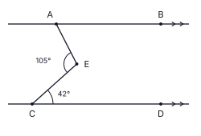
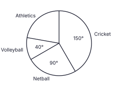
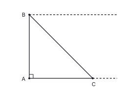
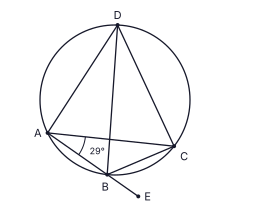

Kasun's farm has a field that 12 workers, all working at the same rate, can weed in 15 days. How many more workers are needed to weed the field in 9 days?
In the figure, AB ∥ CD. Find the size of BÂE.

Simplify: 34x + 56x − 13x
A right prism has a triangular base. Which one of the following quadrilaterals can not be a face of this prism? Put a tick (✓) against it.
(i) a square (ii) a rhombus which is not a square (iii) a rectangle
The pie chart shows the favourite sport of the students in a class. Each student chose exactly one sport. 12 students chose volleyball. How many students chose cricket?

In the figure, O is the centre of the circle. The chord AB is bisected at C and DOC is a straight line. If AÊB = 110°, find CD̂B.

Factorise: 3x2 − 75
It is given that 100.6990 = 5. Write the value of lg 50.
AB is a vertical lamp post standing on level ground (BÂC = 90°). Kasun at C on the ground looks up at the lamp B, and a worker at B looks down at Kasun. On the figure, mark the angle of elevation of B from C as a and the angle of depression of C from B as b, and write the relation between a and b.

The height of a cylindrical can is 4 times its base radius r. The curved surface area of a cylinder of base radius r and height h is 2πrh. Find the ratio of the area of paper needed to cover the curved surface of the can to the area of paper needed to cover its circular base.
Two fair tetrahedral dice have their four faces marked 2, 4, 6 and 8. Both dice are rolled once and the number on the face on which each die rests (the bottom face) is noted. Find the probability that the sum of the two numbers is 12.
In the figure ABC is a straight line and AB = BD = DC. If BD̂C = 40°, find the value of x.

The universal set is ξ = {1, 2, 3, ..., 10}. A = {factors of 12}, B = {even numbers}. Tick (✓) the correct statement.
(i) A ∩ B = {2, 4} (ii) A ∪ B = {1, 2, 3, 4, 6, 8, 10} (iii) n(A′) = 4
Simplify: 6x3y2 × 5xy310x2y2
The second term and the third term of a geometric progression are −12 and 6 respectively. Find the fifth term.
In the figure, ABCD is a cyclic quadrilateral. BD bisects AD̂C and AB is produced to E. If BÂC = 29°, find CB̂E.

Find the highest common factor of 24p3q2, 36p2q3 and 60p2q.
A right prism whose base is a triangle of area 154 cm2 and a right circular cylinder have the same height and the same volume. Find the base radius r of the cylinder. (Volume of a cylinder = πr2h)
In the triangle ABC, D and E are the midpoints of AB and AC respectively, and AD̂E = 90°. AD = 3 cm and AE = 5 cm. Find the perimeter of the trapezium BCED.

Find the equation of the straight line passing through the points (2, 3) and (6, 5).
In the figure, O is the centre of the circle, AOB is a straight line and ABCD is a parallelogram. If BĈD = 70°, find DÊB.

Nadeesha invested a sum of money for 2 years at an annual compound interest rate of 5%. After 2 years the total amount she received was Rs 22 050. Find the sum she invested.
In the figure, C is the centre of the circle and AC ∥ BD. If BD̂C = 70°, find AÊB.

Solve the inequality 4x + 15 > 3 and write the negative integer values of x that satisfy it.
Two paths AB and AC meet at A. A circular pond touches the path AB at B and also touches the path AC. The figure shows part of the construction for finding the centre of the pond. Using a straight edge and a pair of compasses, complete the construction and mark the centre O of the pond.